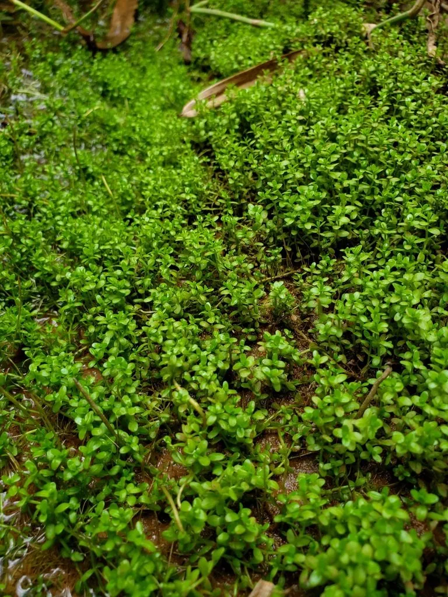

水生植物 · 植物界
迷你矮珍珠 Hemianthus callitrichoides

车前科多年生匍匐水生草本，叶片仅几毫米，贴底砂蔓延成翠绿“地毯”，是水草造景中最著名的前景草。
- 分类
- 门被子植物门纲木兰纲目唇形目科车前科属水珍珠属
- 栖息环境
- 加勒比地区浅水沼泽、溪流边缘的湿泥与浅水，喜强光
- 地理分布
- 原产古巴及加勒比地区，现世界各地水族爱好者广泛栽培
- 保护级别
- 暂无评估；野生分布区狭窄，需关注栖息地保护
物种志
迷你矮珍珠为车前科水珍珠属多年生匍匐水生草本，茎细如线，匍匐于底砂表面，节上生根。叶对生，圆形至卵形，直径仅 2–4 毫米，鲜绿色，密集排列成小巧的“珍珠”状。花极小，单生于叶腋，白色，水下极少开花。
迷你矮珍珠原产古巴西部及加勒比地区的浅水沼泽与溪流边，适宜水深 0–10 厘米，喜强光、充足二氧化碳与软水，水温 22–28 ℃。它贴地生长、蔓延成毯，是水草造景中表现“草原”与“山坡”的经典前景草，被誉为水草缸的“地毯之王”。栽培难度较高：光照不足会向上徒长、失去匍匐形态，缺二氧化碳则生长停滞甚至溶叶。通常以分株方式一小丛一小丛插入底砂，约 4–8 周可铺满。
形态与习性
- 株高仅 1–3 厘米，叶片径 2–4 毫米
- 水深适宜水深 0–10 厘米，可完全沉水
- 水质喜软水，pH 6.0–7.0，必须补充二氧化碳
- 光照需强光，弱光下徒长、无法铺地
- 生长匍匐茎贴底砂蔓延，4–8 周可成毯
- 繁殖分丛扦插，每丛 3–5 茎插入底砂
趣味知识
- 它的叶片只有 2–4 毫米，是目前水族箱中叶片最小的前景草之一。
- 迷你矮珍珠必须靠强光与二氧化碳才能贴地生长，缺一不可，否则会向上“拔高”。
- 造景时常用它表现远山草坡，与石头结合可营造微缩草原景观。
- 它的野生分布仅限古巴等加勒比岛屿的浅水湿地，分布区相当狭窄。